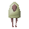
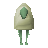
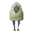
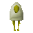
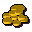
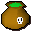
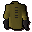
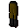
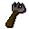

Sheep Herder
Scripts in
scripts/quests/quest_sheepherder/NPCs involved

Diseased sheep 1
Diseased sheep 2
Diseased sheep 3
Diseased sheep 4Items involved

Coins 100
Feed
Plague jacket
Plague trousers
ProdInvolvement is derived from identifiers referenced by the quest scripts.